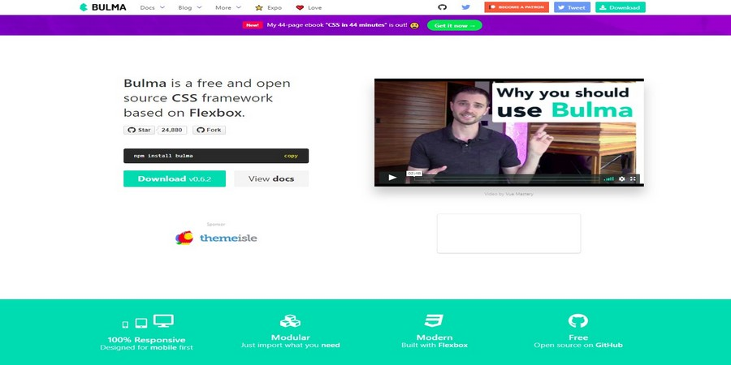

FREECODECAMP TRIBUTE PAGE
Nigel Francis
This projected is part of the FreeCodeCamp's curriculum. It's the first project that is asked for, but I've done things backwards and this is the second project, as I completed my portfolio project first! Which became this website.
I've presently gone way past this request and have reached well into the basic JavaScript program.
The instruction been: build a simple tribute page with an image and text. Here I've used a new framework. Bulma. Keeping things responsive too.
Bulma is a free and open source CSS framework based on Flexbox.
I chose a moderately anonymous WWII hero, who would've had a hand in the course of the conflict and its outcome. Only a few will have heard the name: Amédée Maingard.
Before I get onto the tribute page, I had found a few great resources attaining to HTML and CSS.
A free guide to HTML. Learn by example: htmlreference.io is a free guide to HTML. It features all elements and attributes.
A free visual guide to CSS. Learn by example: cssreference.io is a free visual guide to CSS. It features the most popular properties, -size">I use both the two reference websites as a very good cheat sheet.
Bulma's features:
- Flexbox based: Makes creating grid items and vertically aligned things really easy. 
- Well documented: So important.
- Solid looking foundation: All the typography, buttons, tables, forms, and basic CSS stuff you'd expect
- Modular: Built with Sass. Only import the features that you'll need.
I think I'd come across Bulma from a promoted tweet on my Twitter timeline. It's promoted as: Bulma is a free and open source CSS framework based on Flexbox. So with that, I thought I'd give it a spin!
Bulma appears to be a fairly new addition to the suite of modern CSS frameworks. From first glance the base library looks clean and fresh. It provides a modular SASS framework to optimize your bundle to only the necessary classes which we will use as much as possible.
SASS (Syntactically Awesome Style Sheets) is something I haven't got
into, but I
didn't find this a problem, as I was creating a very basic-web-page. Basically SASS is, CSS with
Responsive: Mobile first framework similar to Bootstrap

What is Flexbox? Flexbox or CSS Flexible Box Layout Module is a layout mode used almost exclusively in responsive websites, that provides for a better arrangement of all of the page elements that behave in a predictable mode. Flexbox accommodates said elements inside flexible boxes (creative name, huh?) ensuring that every feature in your web page is displayed properly, in any screen size or resolution.
I've used Bootstrap in the past (this website is built on it), but as I've gained more experience I've wanted to move away from a full framework and use something less bloated. Again, trying to keep to my moto 'Keep It Simple Stupid' K.I.S.S!
To be honest, even Bulma is a bit overkill for such a basic web page as this.
But, the Bulma 0.6.2 zipped file size is 89.53kb. This is considerably less than Bootstraps huge 4.0.0 2.15mb!
There's 3 methods of loading the files as seen above. I've yet to get familiar with the command line ... perhaps one day! But, if your serious about the site, it's best to download the repository or zip file.
There's a plus though in using the cdnjs link, it's that your
files will
automatically be updated.
The documentation is clean and easy to understand.
Bulma supports Font Awesome 5 and is also compatible with all font icon libraries: Font Awesome 5, Material Design Icons, Open Iconic, Ionicons etc.
Column layout is very similiar to Bootstrap. Having 12 columns to work with using the Flexbox model.
The Bulma syntax uses the is- keyword to identify
modifiers on the base class. For buttons, button is the base class and there are
modifiers
like is-primary, is-small, and more.
Here's a comparison of the Bootstrap vs Bulma classes. Pretty similar overall
and
Bulma uses the is- keyword that is pretty readable. We have a button that
is-danger, is-large, is-inverted. There's even classes for
is-outlined.
All in all, the build with Bulma is a pleasure to use, along with simple to follow documentation. As with its zip file, it's not bloated.
Bulma's created by Jeremy Thomas @jgthms. Also he's the creator of the HTML and CSS resources above.
I look forward to using Bulma again.